Sivustosta
Mistä Ruukkilabra sai alkunsa?
Kiviruukin lukioon avataan englanninkielinen lukiolinja vuonna 2027. Linjalle tarvittiin fysiikan oppimateriaalia. Suomalaisen lukion opetussuunnitelman mukaista fysiikan materiaalia on englanniksi hyvin vähän. Siksi sopivaa materiaalia piti alkaa tehdä itse.
Samalla syntyi ajatus laajemmasta oppimisympäristöstä. Miksi tehdä materiaalia vain englanniksi? Saman sisällön voi tarjota eri kielimuodoissa. Silloin samaa materiaalia voivat käyttää opiskelijat, joilla on erilainen kielitausta. He voivat käyttää sitä myös samassa opetusryhmässä.
Yksi oppimateriaali, kolme kielimuotoa
Ruukkilabran tavoite on tarjota fysiikan oppimateriaalia suomeksi, tuetulla suomella ja englanniksi. Opiskelija voi vaihtaa kielimuotoa tarpeen mukaan. Hän voi tutustua käsitteisiin eri kielillä. Hän voi edetä omista lähtökohdistaan.
Tavoite ei ole kolme erillistä oppikirjaa. Tavoite on yhteinen oppimisympäristö, joka tukee erilaisia oppijoita.
Kieli ei saisi olla turha este fysiikan ymmärtämiselle.
Tutkimista, oivaltamista ja tekemistä
Fysiikkaa opitaan monella tavalla: tutkitaan ilmiöitä, tehdään havaintoja, rakennetaan malleja ja ratkaistaan ongelmia. Pelkkä teorian lukeminen tai tehtävien laskeminen ei riitä.
Ruukkilabrassa on teoriaa, havainnollistuksia, simulaatioita, kokeellista työskentelyä ja harjoituksia. Materiaalilla voi opiskella itsenäisesti. Sitä voi käyttää myös opettajan ohjauksessa. Kokeelliseen työskentelyyn kannustetaan. Sitä painotetaan erityisesti lähiopetuksessa, jossa ilmiöitä voi tutkia käytännössä.
Tekoäly kehittämisen apuna
Ruukkilabran kehittämisessä käytetään agenttipohjaista tekoälyä. Tekoäly tekee erityisesti sisältöjen raakaversioita. Se auttaa myös kieliversioissa, kuvituksessa, simulaatioissa ja ohjelmoinnissa.
Tekoälyn avulla voi rakentaa oppimisympäristön, joka olisi yhdelle opettajalle muuten hyvin työläs tehdä.
Pedagogiset ratkaisut ja vastuu sisällöistä ovat kuitenkin minulla. Materiaalia tarkistetaan ja kehitetään koko ajan. Siinä voi silti olla virheitä.
Tekijä
Olen Lauri Hellsten. Olen fysiikan, kemian ja matematiikan opettaja Espoosta. Olen työskennellyt pitkään luonnontieteiden opetuksessa. Olen myös kehittänyt pitkään digitaalisia oppimateriaaleja.
Ruukkilabra on oma oppimateriaaliprojektini. Sen lähtökohta on Kiviruukin lukion tuleva opetus. Materiaali on silti tarkoitettu myös muille opettajille ja opiskelijoille.
Ruukkilabra kehittyy koko ajan. Otan mielelläni vastaan palautetta ja kehitysehdotuksia.